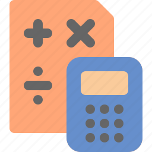

Калькулятор степенів
Калькулятор степенів - це корисний онлайн інструмент, який допомагає обчислити число, підняте до заданої степені. Він призначений для тих, хто потребує швидко та легко знаходити результати математичних операцій степенювання без необхідності використовувати складні обчислення.
Калькулятор
Результат:
Як користуватися калькулятором:
- Введіть основу числа в поле "Основа". Основа - це число, яке ви хочете підняти до степені.
- Введіть ступінь степенювання в поле "Степінь". Це число вказує, до якого степеня потрібно підняти основу.
- Натисніть кнопку "Обчислити".
- Результат степенювання з'явиться нижче в полі "Результат".

Калькулятор степенів може бути корисним для розв'язання різних завдань, таких як обчислення площі, об'єму, визначення відсотків та багатьох інших математичних обчислень. Він швидко допоможе вам отримати точні результати степенювання, спрощуючи ваши розрахунки.
Використовуйте цей калькулятор, щоб легко і швидко виконувати операції степенювання та розв'язувати математичні завдання, які вимагають підняття чисел до певних степенів.